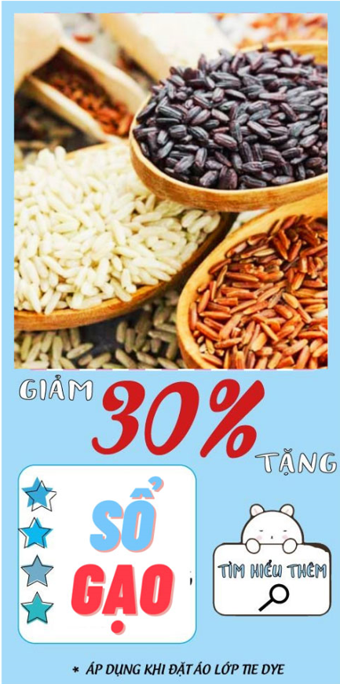

Chính sách đại lý
Với đam mê nông nghiệp và truyền truyền thống gia đình gắn bó với nông nghiệp được tiếp xúc
nhiều với nông dân, anh Bùi Ngọc Cường founder của Ngỗng quyết tâm theo học nông nghiệp tại Học
Viện Nông Nghiệp Việt Nam. Sau đó, Cường tiếp tục sang Hà Lan du học về phát triển bền vững với
mong muốn nông dân Việt Nam có thể sản xuất công nghiệp hóa , đưa khoa học kỹ thuật công nghệ
vào sản xuất giúp nông dân đỡ vất vả thoát cảnh bán mặt cho đất bán lưng cho trời, cải thiện thu
nhập.
Sau đó Cường tìm hiểu thêm về PGS - Hệ thống chứng nhận hữu cơ đảm bảo có sự tham gia-dành cho
các hộ nông dân và xin vào làm việc tại Hiệp hội nông nghiệp hữu cơ để hiểu hơn về bản chất,
cách thức vận hành, thanh tra giám sát, làm việc với nông hộ.

Trang trại bò sữa vinamilk organic Đà Lạt
Với đam mê nông nghiệp và truyền truyền thống gia đình gắn bó với nông nghiệp được tiếp xúc
nhiều với nông dân, anh Bùi Ngọc Cường founder của Ngỗng quyết tâm theo học nông nghiệp tại Học
Viện Nông Nghiệp Việt Nam. Sau đó, Cường tiếp tục sang Hà Lan du học về phát triển bền vững với
mong muốn nông dân Việt Nam có thể sản xuất công nghiệp hóa , đưa khoa học kỹ thuật công nghệ
vào sản xuất giúp nông dân đỡ vất vả thoát cảnh bán mặt cho đất bán lưng cho trời, cải thiện thu
nhập.
Sau đó Cường tìm hiểu thêm về PGS - Hệ thống chứng nhận hữu cơ đảm bảo có sự tham gia-dành cho
các hộ nông dân và xin vào làm việc tại Hiệp hội nông nghiệp hữu cơ để hiểu hơn về bản chất,
cách thức vận hành, thanh tra giám sát, làm việc với nông hộ.
Vinamilk organic Đà Lạt ở đâu?
Đăng ký chuyến đi
